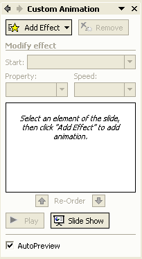
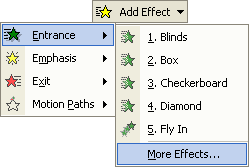
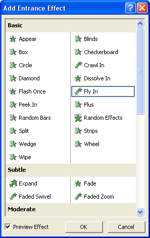
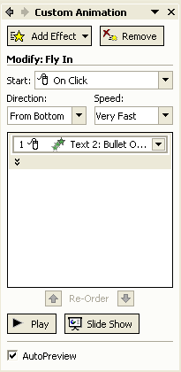
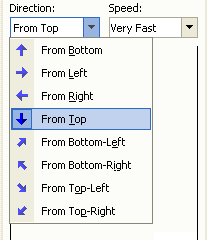

Free
powerpoint
Tutorials
|
Free
powerpoint
Tutorials
|
|
 home home |
Stay at Home and Learn | ||||
Bullet Animation - PowerPoint 2003 |
|||||
|
Part 1, 2, 3, 4, 5, 6, 7, 8, 9, 10, 11
To animate your bullets in PowerPoint 20003, click anywhere inside of your bulleted list. Then click Slide Show > Custom Animation from the menu bar at the top. You should then see the following Task Pane on the right hand side (if you can't see the Task Pane, click View > Toolbars > Task Pane):  Make sure there is a tick in the box at the bottom for AutoPreview. But the Add Effects button at the top should be available. Click Add Effects > Entrance > More Effects:  When you click More Effects, you'll see the following dialogue box appear:  Have a play around with the Effects on the list. When you click one, you should see what it looks on the Main stage. But select the Fly In effect, and then click OK: When you click OK, the Task Pane will change to this:  The new item is under Modify: Fly in. This is when you can refine the effect you have chosen. At the moment, the Direction is From Bottom, and the Speed is Very Fast. Leave the speed, but click the Direction dropdown list and set it to From Top:  Click the Play button at the bottom to see what your effect looks like. You'll learn more about Custom Animations in a later section. The only thing left to do for this slide is to add some notes. Click inside the Notes box at the bottom, and type some notes for this slide. You can use the same notes as we did. To see a full slide view, press the F5 key on your keyboard to launch
your presentation. But now, let's move on to slide three, which adding
the GIF images.
|
||||